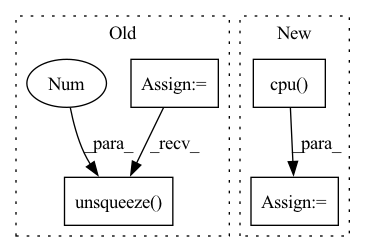

Pattern ID :9567
Before Change
ratio_h = ratio_w = 1 / target_ratio
// preprocessing
x = normalizeMeanVariance(img_resized)
x = torch.from_numpy(x).permute(2, 0, 1) // [h, w, c] to [c, h, w]
x = Variable(x.unsqueeze(0 ) ) // [c, h, w] to [b, c, h, w]
x = x.to(device)
// forward passAfter Change
for out in y:
// make score and link map
score_text = out[:, :, 0].cpu().data.numpy()
score_link = out[:, :, 1].cpu() .data.numpy()
// Post-processing
boxes, polys, mapper = getDetBoxes(In pattern: SUPERPATTERN
Frequency: 3
Non-data size: 4
Instances Fragment ID: 34208649
Project Name: jaidedai/easyocr
Commit Name: 78be56f87d091dfcea6d2289948fc86cc7188cf7
Time: 2021-06-12
Author: samhunsadamant@gmail.com
File Name: easyocr/detection.py
M Class Name: AnonimousClass
N Class Name: AnonimousClass
M Method Name: test_net(10)
N Method Name: test_net(10)
M Parent Class:
N Parent Class:
M File Name: easyocr/detection.py
N File Name: easyocr/detection.py
M Start Line: 26
M End Line: 58
N Start Line: 25
N End Line: 71
Before Change
async def query(query: Query) -> List[Dict[str, float]]:
text = [query.query.text] + [document.text for document in query.documents]
embeddings = encode(text)
// query_id = query.query.uid
query_embedding = embeddings[0].unsqueeze(0 ) .cpu().numpy()
document_ids = [int(doc.uid) for doc in query.documents]
document_embeddings = embeddings[1:].cpu().numpy()
After Change
top_k = max(min(query.top_k, len(query.documents)), 0) if query.top_k else None
// Embed the query and perform the search
query_embedding = encode(query.query.text).cpu() .numpy()
top_k_scores, top_k_indicies = model.index.search(query_embedding, top_k)
top_k_indicies = top_k_indicies.reshape(-1).tolist() Fragment ID: 34208639
Project Name: pathwaycommons/semantic-search
Commit Name: b9f93d776ecb495fc68c9e7562f0b62701d88f00
Time: 2021-03-02
Author: johnmgiorgi@gmail.com
File Name: semantic_search/main.py
M Class Name: AnonimousClass
N Class Name: AnonimousClass
M Method Name: query(1)
N Method Name: query(1)
M Parent Class:
N Parent Class:
M File Name: semantic_search/main.py
N File Name: semantic_search/main.py
M Start Line: 88
M End Line: 105
N Start Line: 92
N End Line: 115
Before Change
other_idx = torch.where(condition1, other_idx, other_idx1) // (C, batch_size)
min_values, min_idx = torch.where(other_idx, values, values.max()).min(dim=-1)[0] // (C)
min_labels = labels.gather(dim=1, index=min_idx.unsqueeze(1)).flatten() // (C)
min_labels_counts = labels.eq(min_labels.unsqueeze(1 ) ).int().sum(dim=1) // (C)
condition2 = min_labels.ge(self.n_samples - 2) // todo: Not sure: self.n_samples -> self.seed_num
idx_list = condition2.nonzero()[:self.top_n_neurons]
neuron_dict[layer] = {int(idx): int(min_labels[idx]) for idx in idx_list}After Change
def find_min_max(self, all_ps: Dict[str, torch.Tensor], _label: torch.Tensor) -> Dict[str, Dict[int, float]]:
neuron_dict: Dict[str, Dict[int, float]] = {}
_label = _label.cpu()
for layer in all_ps.keys():
ps = all_ps[layer] // (C, n_samples, batch_size, num_classes)
vs: torch.Tensor = ps[:, self.n_samples // 5:].max(dim=1)[0] \
- ps[:, :self.n_samples // 5].min(dim=1)[0] // (C, batch_size, num_classes) Fragment ID: 34208641
Project Name: ain-soph/trojanzoo
Commit Name: 1684c28ef38502abb83d37beb845b69007e33274
Time: 2020-07-07
Author: ain-soph@live.com
File Name: trojanzoo/defense/backdoor/abs.py
M Class Name: ABS
N Class Name: ABS
M Method Name: find_min_max(3)
N Method Name: find_min_max(3)
M Parent Class: Defense_Backdoor
N Parent Class: Defense_Backdoor
M File Name: trojanzoo/defense/backdoor/abs.py
N File Name: trojanzoo/defense/backdoor/abs.py
M Start Line: 210
M End Line: 225
N Start Line: 234
N End Line: 254